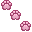

HELLO, WORLD! ✧
Olá, eu sou a Esther
Desenvolvedora Front-end • Criativa por natureza
Pensando em mil coisas ao mesmo tempo, codando algumas delas e tomando meu chá gelado.
Sobre Mim
Sou graduada em Jogos Digitais, pós-graduada em Desenvolvimento de Sistemas
(Java e PHP) e Técnica em Informática.
Gosto de transformar ideias em interfaces bonitas, organizadas e intuitivas,
sempre buscando unir criatividade e tecnologia em cada projeto.
Atualmente continuo estudando, desenvolvendo projetos
e aprimorando minhas habilidades como desenvolvedora.
Skills
Frontend
HTML, CSS, JavaScript e Bootstrap.
Backend
PHP, Java e C#.
Banco de Dados
MySQL e SQL.
Ferramentas
Git, GitHub e VS Code.
Projetos
GroszTech 2.0
Site institucional desenvolvido para apresentar a empresa e documentar o projeto UniBoard.
Helpard
Sistema web para abertura, acompanhamento e gerenciamento de chamados técnicos.
Contato
Tem alguma oportunidade ou quer conversar sobre tecnologia? Vamos nos conectar! ♡
